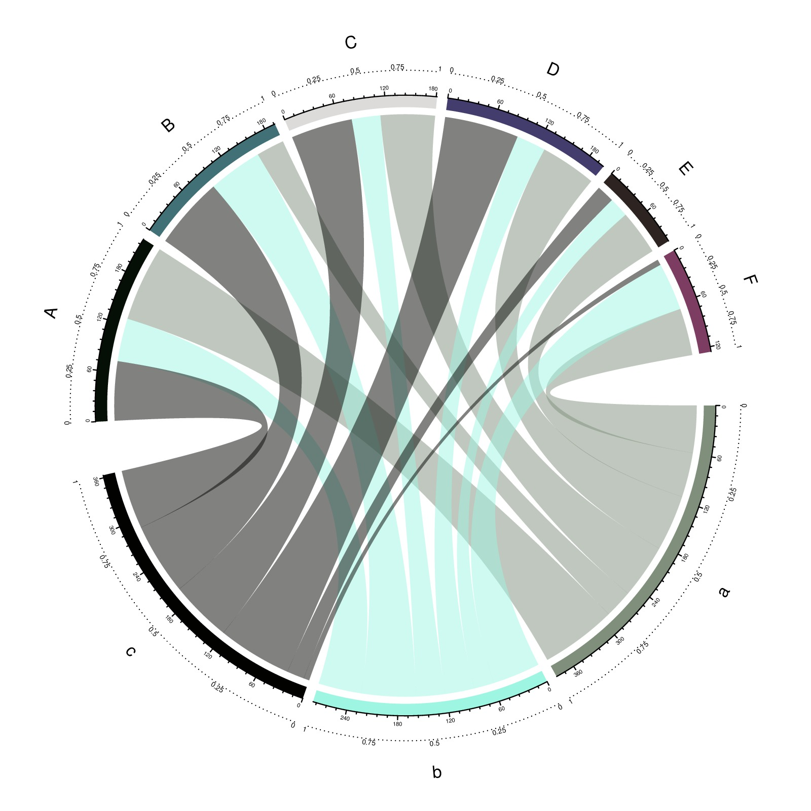

library(circlize)
mat = matrix(sample(1:100, 18, replace = TRUE), 3, 6)
rownames(mat) = letters[1:3]
colnames(mat) = LETTERS[1:6]
rn = rownames(mat)
cn = colnames(mat)
circos.par(gap.after = c(rep(2, nrow(mat)-1), 10, rep(2, ncol(mat)-1), 10))
chordDiagram(mat, annotationTrack = "grid", transparency = 0.5,
preAllocateTracks = list(track.height = 0.1))
for(si in get.all.sector.index()) {
circos.axis(h = "top", labels.cex = 0.3, sector.index = si, track.index = 2)
}
circos.trackPlotRegion(track.index = 1, panel.fun = function(x, y) {
xlim = get.cell.meta.data("xlim")
ylim = get.cell.meta.data("ylim")
sector.name = get.cell.meta.data("sector.index")
circos.lines(xlim, c(mean(ylim), mean(ylim)), lty = 3)
for(p in seq(0, 1, by = 0.25)) {
circos.text(p*(xlim[2] - xlim[1]) + xlim[1], mean(ylim), p, cex = 0.4, adj = c(0.5, -0.2), niceFacing = TRUE)
}
circos.text(mean(xlim), 1.4, sector.name, niceFacing = TRUE)
}, bg.border = NA)
circos.clear()